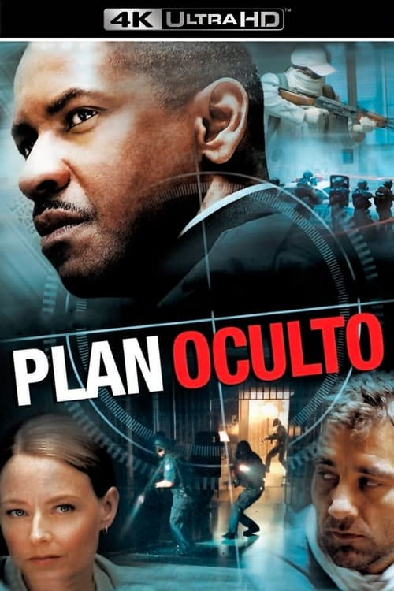

Plan oculto (2006)
Sinopsis Rápida
¿Qué pasaría si descubrieras que la vida que conoces es una elaborada mentira? Un agente encubierto se ve envuelto en una red de traición y engaño que pondrá a prueba sus límites.
Sinopsis Detallada
En 'Plan oculto', Benicio del Toro interpreta a un agente de la CIA que se encuentra atrapado en una compleja conspiración que amenaza con desestabilizar al mundo. Su lealtad es puesta a prueba a medida que se desentrañan las mentiras, descubriendo una verdad mucho más oscura de lo que jamás imaginó. La película presenta un ritmo trepidante y giros inesperados que mantienen al espectador al borde de su asiento. La tensión constante y las implicaciones globales de la trama la hacen una experiencia cinematográfica inolvidable. La excelente interpretación del elenco principal, junto a la dirección efectiva, logra una atmósfera de suspenso genuino.
¿Por qué tenés que verla?
- Una trama compleja y absorbente que te mantendrá enganchado hasta el final.
- La actuación magistral de Benicio del Toro como el agente atormentado.
- Su exploración de la moralidad y las consecuencias de las acciones en el mundo de las operaciones encubiertas.
- Excelente desarrollo de la tensión y los giros argumentales.
Idea Extra
Análisis comparativo de 'Plan oculto' con otras películas de thrillers de conspiración, explorando las similitudes y diferencias en sus tramas y temas.